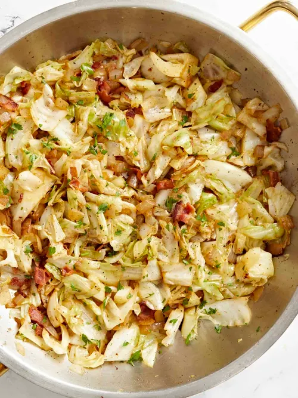

home
Fried Cabbage

Description
Butter Cabbage is cabbage that is keto and buttered. Very delicious caramalized
Ingredients
8 oz Butter
Cabbage
salt
Steps
Chop up cabbage
In medium heat, melt butter
Add cabbage and stir periodically
Once golden remove from heat